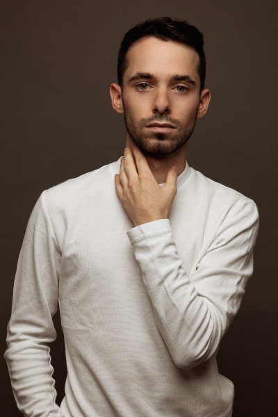
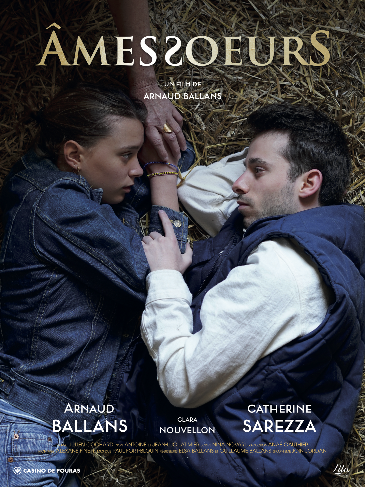
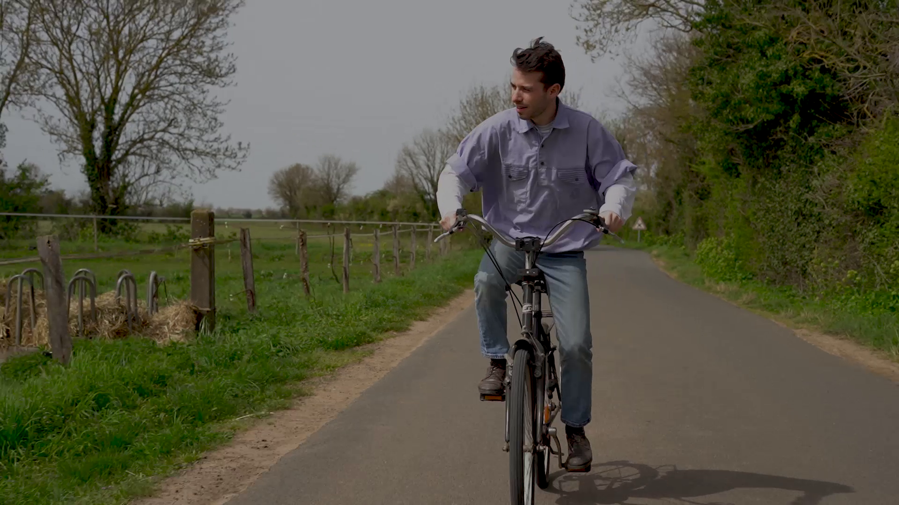
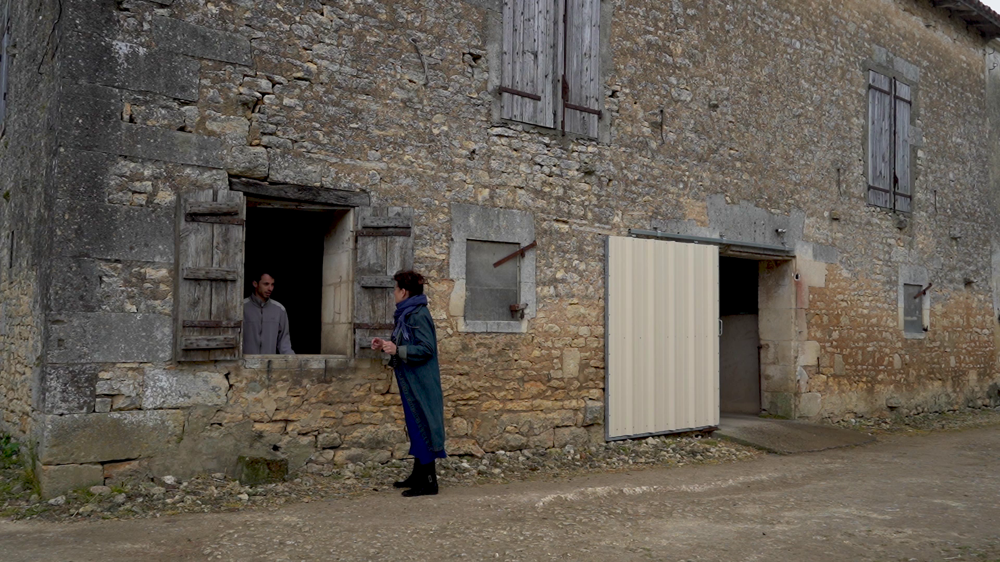
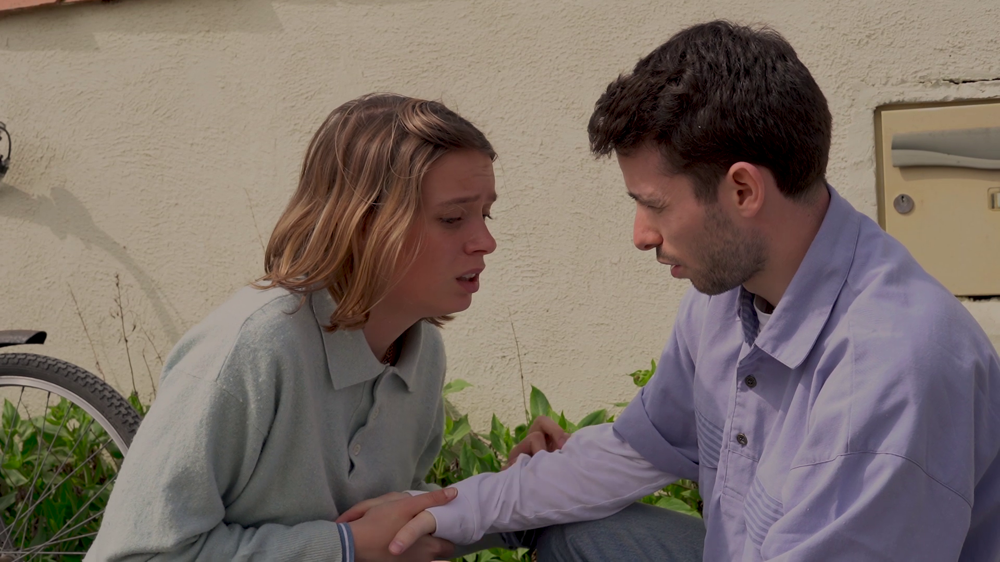
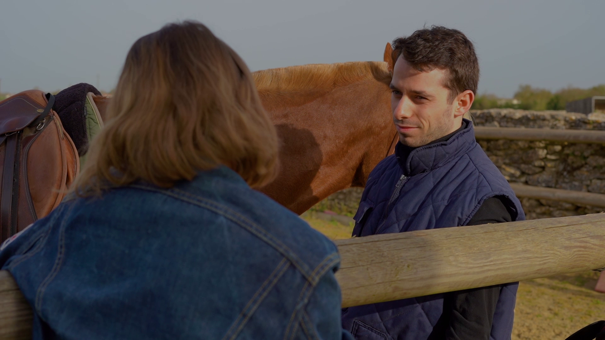
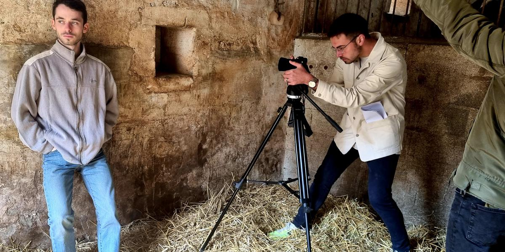
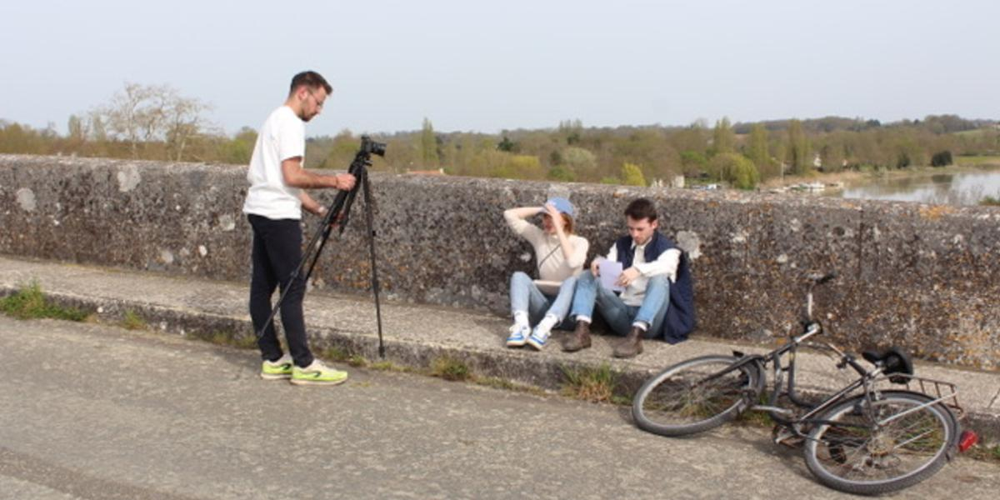
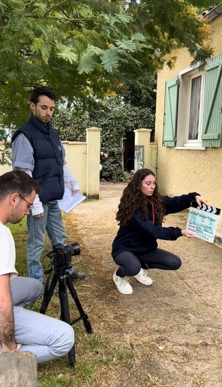
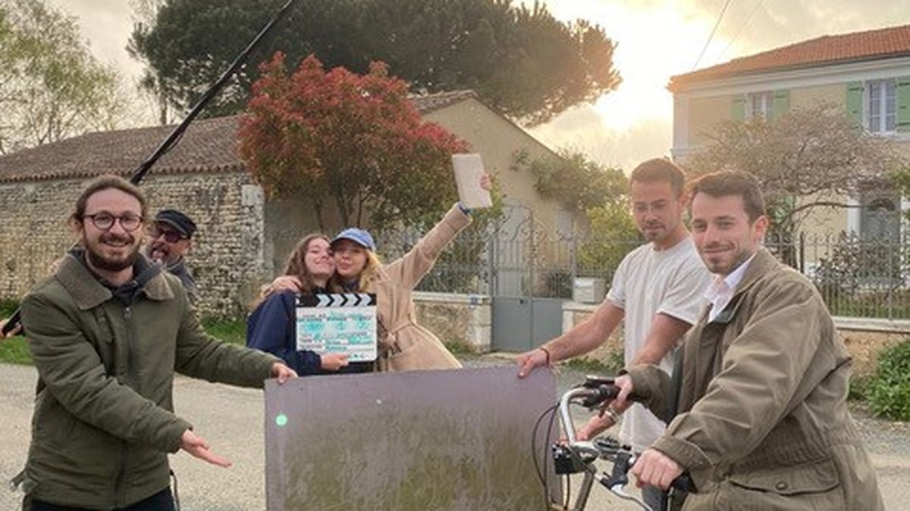

Casino de Fouras
01
Lecture
du scénario
02
Direction
photographique
03
Séance
photo
04
Création
de l’affiche
05
Déclinaisons
RS & print

Arnaud Ballans — Réalisateur
Arnaud Ballans
22 ans · Rochefort, Charente-Maritime
Enfant du Pays rochefortais, le jeune homme porte avec fierté et conviction ce qui est sa première œuvre cinématographique — et probablement pas la dernière.
Ancien élève du lycée Marcel-Dassault de Rochefort, il a découvert le théâtre via le cursus scolaire alors qu’il voulait simplement retrouver ses amis. Il a finalement mordu à l’hameçon — et sans regret. Aujourd’hui, il ne peut pas envisager une autre carrière que celle liée à la création artistique, et plus sûrement encore à l’image.
« Tout s’est fait grâce à celle qui dirigeait les ateliers théâtre du lycée, Catherine Sarrezza. Elle est fantastique et, d’ailleurs, elle joue dans mon film. »
— Arnaud Ballans
Il sait ce qu’il doit aux circonstances — et c’est cette gratitude qui nourrit son regard sur les êtres et les histoires qu’il choisit de raconter.
« Paul et Ester, 20 ans, partagent une histoire d’amour pleine de passion et de complicité depuis près d’un an. Pour l’anniversaire de sa mère, Ester décide d’organiser la rencontre tant attendue entre son petit ami et sa mère, Suzann. Malheureusement, cet évènement va entraîner une réaction inattendue et causer de grandes perturbations entre ces âmes-sœurs, ce qui les plongera tous les trois dans une spirale de souffrances et de déchirements. »
- Production
- Autoproduction
- Langue
- Français
- Sous-genre
- Romance
- Thèmes
- Amour · Famille · Séparation · Adoption · Secret · Ruralité · Équitation
Lift-Off First-Time Filmmaker
Catégorie « New Voices »
2024Indian World Film Festival
IMDb qualifier · Inde
2024Ischia Global Film Festival
Ischia, Italie
2024Ahmedabad International Film Festival
Inde
2025
Âmes
Sœurs
Création d’un logo avec un traitement typographique à la fois élégant et cinématographique, jouant sur l’entrelacement des lettres pour évoquer le lien entre les deux personnages.
La composition place les deux acteurs allongés dans la paille, regards croisés, dans une tension douce et intimiste. Le traitement des couleurs chaudes et la typographie dorée du titre installent une atmosphère romanesque et contemplative.
L’affiche a été déclinée pour les réseaux sociaux et l’affichage grand format pour la promotion du film.
- Format
- 120×160 · RS · Grand format
- Typographie
- Serif · lettres entrelacées
- Ambiance
- Couleurs chaudes · Rurale · Intimiste







